So you’ve got your EE-NBIOT-01 and are anxious to get started. Before the fun can start we need to complete some steps in the Telenor NB-IoT Developer Platform. Let’s go!
Navigate to https://nbiot.engineering. In order to login, you will need a CONNECT account or a GitHub account. Once logged in you should be greeted by a simple dashboard:
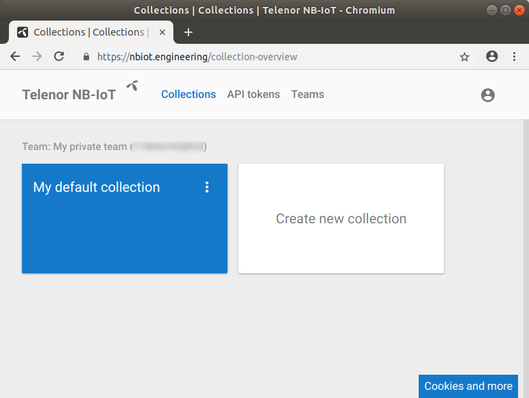
Before we go any further, let’s get familiar with some key concepts in the Telenor NB-IoT Developer Platform: NB-IoT devices are called (drum roll, please) devices. Devices are grouped into collections. A collection may contain zero or more devices. Collections (and, by extension, devices) are owned by teams. A team consists of one or more users. As a user you are always part of a team, including your own private one-person team.
You already have a _user_, the one you logged in with, so let’s create a team. Navigate over to Teams:
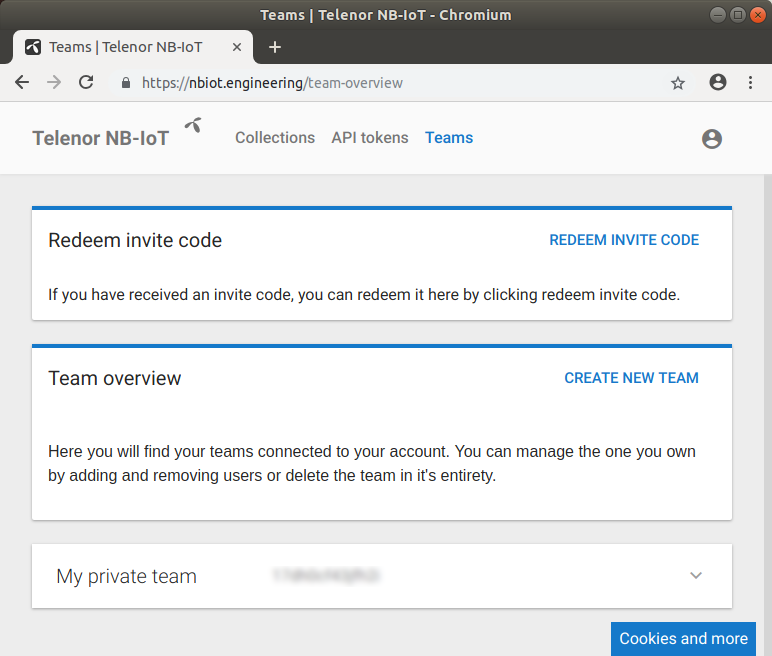
Click on the Create new team button, give it a name, and create the team:
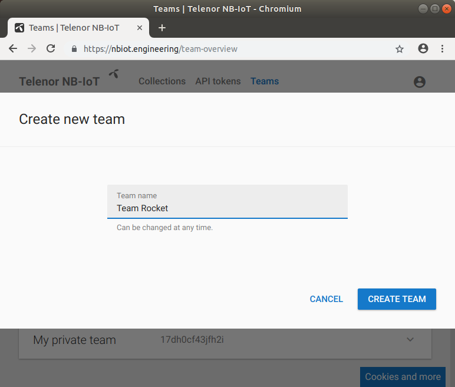
Once the new team is created, the team overview is updated to show the new team:
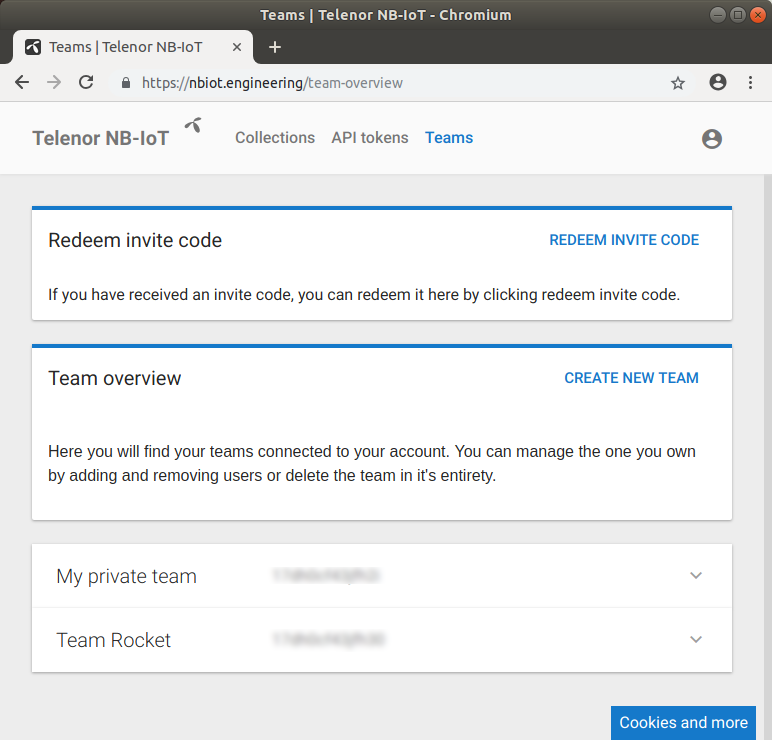
Back at the collection overview we are presented with the possibility to create a new collection for our new team.
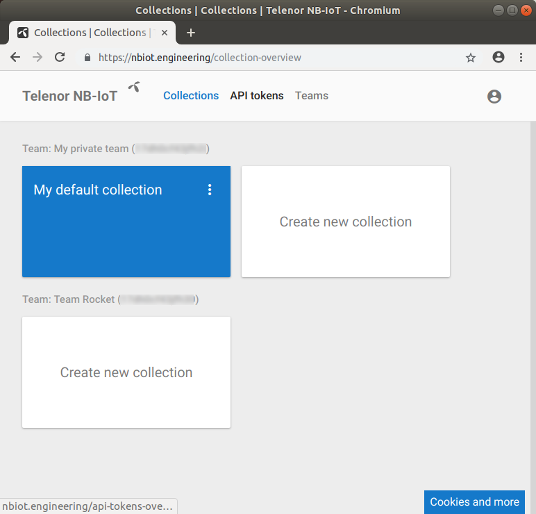
Click the Create new collection, fill in the form, and create the collection:
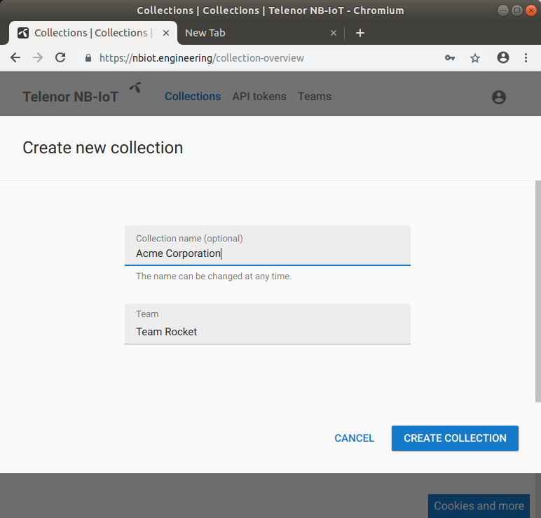
With our new collection created, it’s time to add a device. Clicking on the collection takes us to an overview:
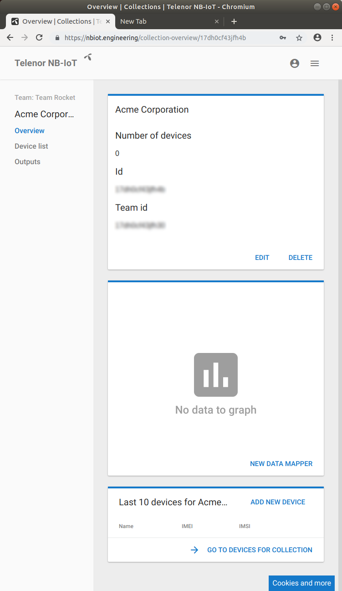
Navigate to _Device list_:
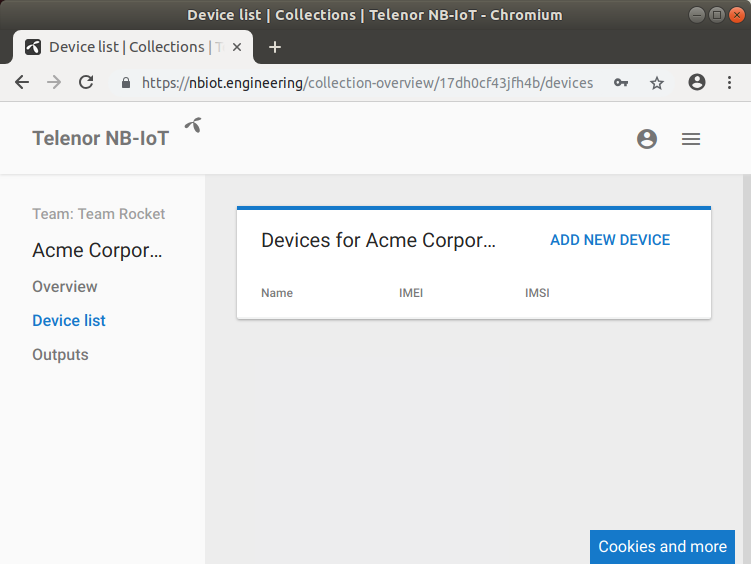
Click on Add device and fill in the form:
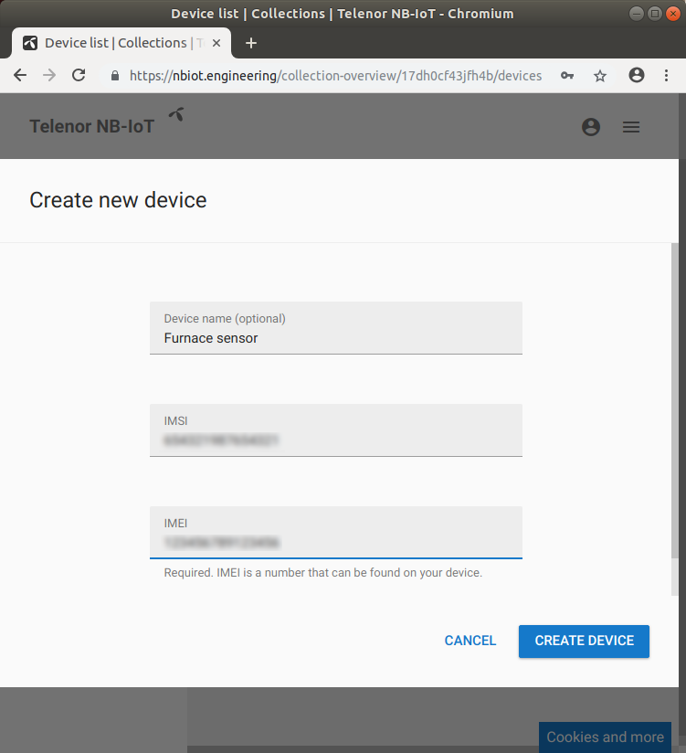
The device name is optional, but it is crucial to get both the IMSI and IMEI correct. In order to get the device IMSI you must query the device itself. The command to query the device for its IMSI is AT+CIMI, but you must first enable the radio by issuing AT+CFUN=1 and waiting a few seconds.
You can also query the device for its IMEI by issuing AT+CGSN=1, which is much more convenient than reading it off the tiny label.
Check out the Interactive terminal tutorial to learn how to issue commands to the EE-NBIOT-01.
With the device created, it’s time to check that everything is working properly. Looking at the Device list in our collection, we find our newly created device:
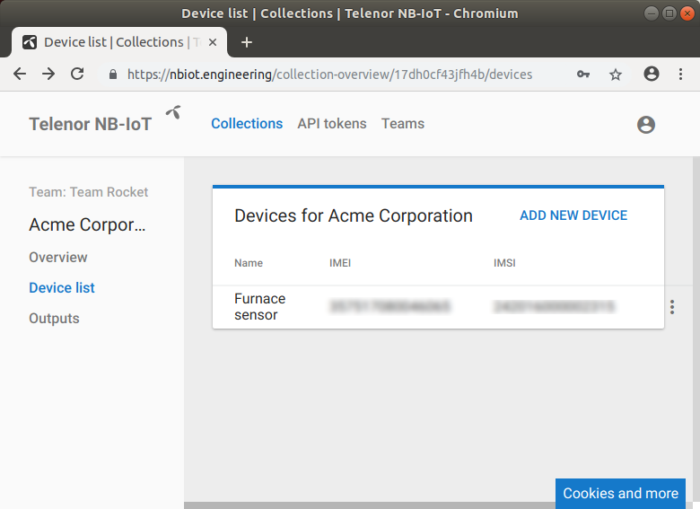
After clicking on the device’s name, we are presented with information about the device. Check the _”Decode base 64 payload”_, send some data and watch it appear! Check out the Interactive terminal tutorial to learn how to send data.
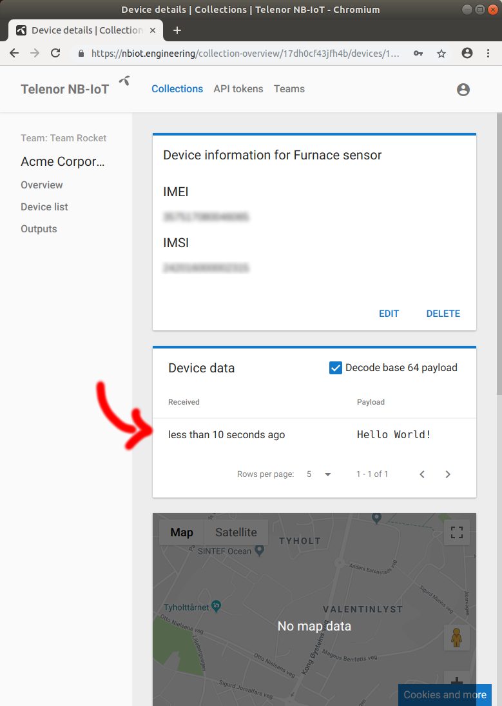
The data has arrived and setup is now complete!